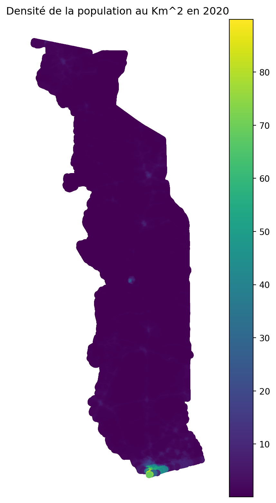
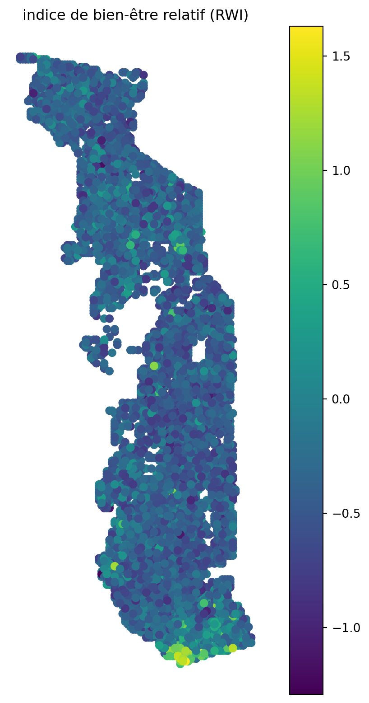
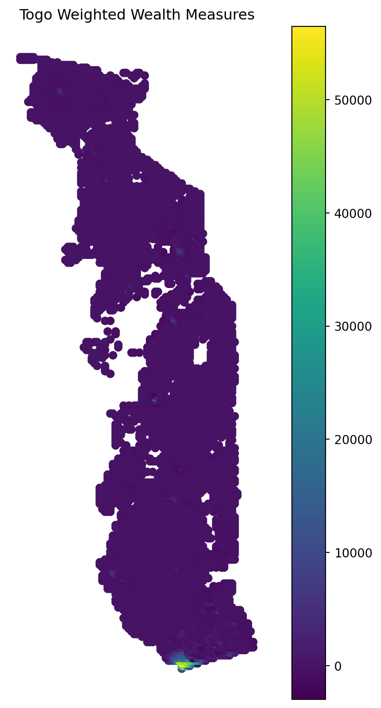
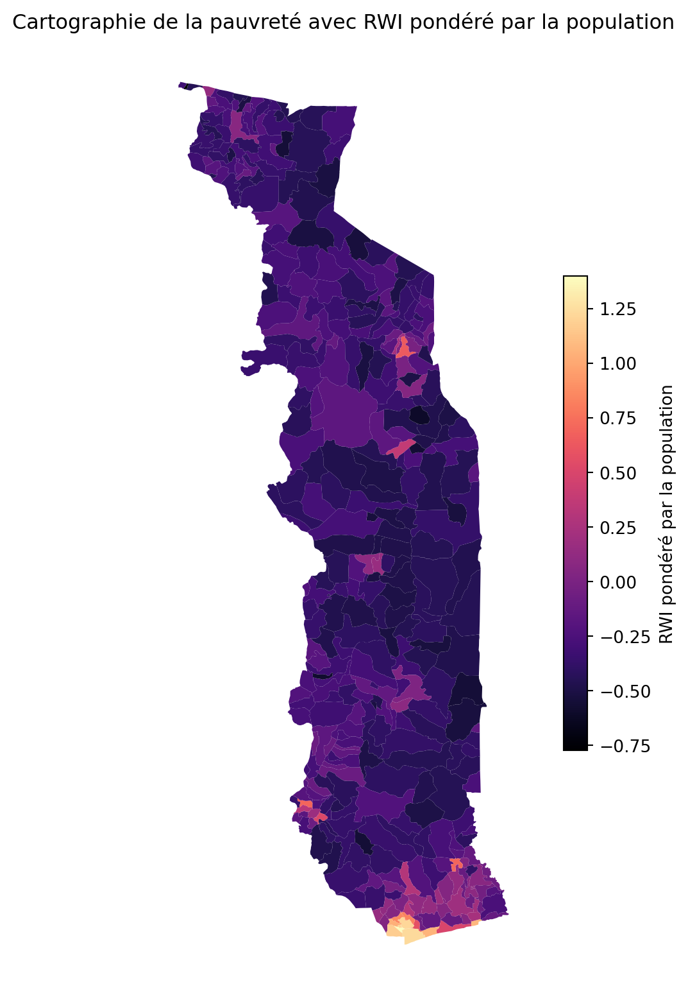

Elaboration de la cartographie de la pauvreté du Togo
Méthode 1: Indice de bien-être pondérée par la population
Author
komlan Nouwokpo
Introduction
La cartographie de la pauvreté est utile pour plusieurs raison:
Mieux cibler les couches les plus vulnérables;
Mieux orienter les aides aux populations
Pour élaborer la cartographie de la pauvreté, il est d’usage d’utiliser les données d’enquête portant sur les dépenses des ménages. Avec les données satellitaires et des machines learnings, Meta/facebook permet d’avoir des données sur la densité de la population et sur le niveau de richesse de la population.
Nous allons comparer ces deux deux méthodes en utilisant dans un premier temps les données de Meta en s’inspirant de la méthodologie utilisée ici https://learn.geo4.dev/Population-Weighted-Wealth.html et utilisant les données de l’enquête EHCV de 2021-2022.
Pour plus de detail sur la densité de la population et le RWI, veuillez lire les metadonnées de ces données.
# les packages à utiliserimport pandas as pdimport numpy as npimport geopandas as gpd# importation de la cartecarte = gpd.read_file('data/shapefiles/tgo_admbnda_adm3_inseed_20210107.shp')# Importation des données de RWIrwi = pd.read_csv('data/tgo_relative_wealth_index.csv')rwi = gpd.GeoDataFrame(rwi, geometry=gpd.points_from_xy(rwi['longitude'], rwi['latitude']))rwi.set_crs('epsg:4326',inplace=True)
latitude
longitude
rwi
error
geometry
0
10.412183
0.714111
-0.455
0.281
POINT (0.71411 10.41218)
1
7.983078
1.285400
-0.375
0.285
POINT (1.28540 7.98308)
2
10.779348
0.560303
-0.157
0.288
POINT (0.56030 10.77935)
3
6.413566
0.933838
-0.102
0.322
POINT (0.93384 6.41357)
4
9.719886
0.362549
-0.336
0.275
POINT (0.36255 9.71989)
...
...
...
...
...
...
6752
9.806503
0.999756
-0.555
0.280
POINT (0.99976 9.80650)
6753
9.351513
0.714111
-0.372
0.280
POINT (0.71411 9.35151)
6754
7.264394
0.736084
-0.107
0.279
POINT (0.73608 7.26439)
6755
6.915520
0.999756
-0.326
0.305
POINT (0.99976 6.91552)
6756
8.548430
1.505127
-0.235
0.272
POINT (1.50513 8.54843)
6757 rows × 5 columns
Les données de population utilisées sont télécharger sur le site Worldpop. Cette fonction importe les données
# Importation des données de la populationimport requestsimport rioxarraydef gather_worldpop_data(data_type, country_iso=None, year=2022):""" Build the url to pull WorldPop data from the API Inputs: data_type (string): Data type options are 'pop' (population), 'births', 'pregnancies', and 'urban_change'.capitalize country_iso (string): The 3-letter country code, if desired. Default will be global. year (int): the 4-digit year of interest for data. Default will be 2015. Return (str, rioxarray DataArray): returns the name of the .tif file downloaded onto your computer containing the data and the DataArray containing the population counts read in using rioxarray. """# Build the API url according to user selection url_base ="https://www.worldpop.org/rest/data" url = url_base +'/'+ data_type +'/wpgp'if country_iso: url = url +'?iso3='+ country_iso# Request the desired data; filter by year json_resp = requests.post(url).json() json_resp = json_resp['data']['popyear'== year]# Obtain exact .geotiff file name for the desired data geotiff_file = json_resp['files'][0]print('Obtaining file',geotiff_file) geotiff_data = requests.get(geotiff_file) file_name ='worldpop_'+ country_iso +'_'+str(year) +'.tif'print('Writing to',file_name)withopen(file_name,'wb') as f: f.write(geotiff_data.content)# Read in the WorldPop data as a GeoTIFF worldpop_raster = rioxarray.open_rasterio(file_name)return file_name, worldpop_raster
Obtaining file https://data.worldpop.org/GIS/Population/Global_2000_2020/2000/TGO/tgo_ppp_2000.tif
Writing to worldpop_TGO_2022.tif
C:\Users\DELL\AppData\Local\Temp\ipykernel_9756\3347273314.py:4: DeprecationWarning: dropping variables using `drop` is deprecated; use drop_vars.
togo_pop = togo_pop.squeeze().drop('spatial_ref').drop('band')
C:\Users\DELL\AppData\Local\Temp\ipykernel_9756\3347273314.py:11: SettingWithCopyWarning:
A value is trying to be set on a copy of a slice from a DataFrame.
Try using .loc[row_indexer,col_indexer] = value instead
See the caveats in the documentation: https://pandas.pydata.org/pandas-docs/stable/user_guide/indexing.html#returning-a-view-versus-a-copy
pop['geometry'] = gpd.points_from_xy(pop['x'], pop['y'])
Exploration des données
Une représentation de la densité de la population
import matplotlib.pyplot as pltfig, ax = plt.subplots(1, 1, figsize=(8,10))pop.plot(ax=ax, column='population',legend=True)ax.axis('off')ax.set_title('Densité de la population au Km^2 en 2020')plt.show()

Une représentation de l’indice de bien-être relatif (RWI)
import matplotlib.pyplot as pltfig, ax = plt.subplots(1, 1, figsize=(8,10))# column='rwi' defines which column from our dataframe to color the points byrwi.plot(ax=ax, column='rwi',legend=True)ax.axis('off')ax.set_title('indice de bien-être relatif (RWI)')plt.show()

Fusion des données de la population et de RWI
On la fonction suivante utilise l’algo k-d trees pour fusionner les données.
from scipy.spatial import KDTreefrom shapely.geometry import Pointimport numpy as np # Define function to find nearest neighbor and join population and wealth datasets accordinglydef ckdnearest(gdA, gdB):# create arrays from each dataset to use in k-d trees nA = np.array(list(gdA.geometry.apply(lambda x: (x.x, x.y)))) nB = np.array(list(gdB.geometry.apply(lambda x: (x.x, x.y))))# create k-d tree from dataset b btree = KDTree(nB)# find the nearest point in dataset b to each point in dataset a dist, idx = btree.query(nA, k=1)# select the nearest points in b identified in the row above gdB_nearest = gdB.iloc[idx].drop(columns="geometry").reset_index(drop=True)# join the nearest points from a and b as a geodataframe gdf = pd.concat( [ gdA.reset_index(drop=True), gdB_nearest, pd.Series(dist, name='dist') ], axis=1)return gdf
Les données fusionnées et conversion en données spatiales
overlay = ckdnearest(pop, rwi)overlay.columns = ['longitude_pop', 'latitude_pop', 'pop', 'geometry', 'latitude_rwi', 'longitude_rwi', 'rwi', 'error', 'dist']#overlay = overlay.groupby([], as_index=False).agg('sum')overlay = overlay.groupby(['latitude_rwi', 'longitude_rwi','rwi']).agg(pop=('pop',np.sum)).reset_index()overlay = overlay[['latitude_rwi', 'longitude_rwi', 'pop', 'rwi']].rename({'pop':'pop_weight'}, axis=1)overlay['weighted_rwi'] = overlay['pop_weight']*overlay['rwi']# Convert joined dataset to GeoDataFrameoverlay = gpd.GeoDataFrame(overlay, geometry=gpd.points_from_xy(overlay['longitude_rwi'], overlay['latitude_rwi']))overlay.set_crs(4326,inplace=True)# Show first 10 rows of datasetoverlay.head(10)
C:\Users\DELL\AppData\Local\Temp\ipykernel_9756\2260589084.py:6: FutureWarning: The provided callable <function sum at 0x000002277F83BEC0> is currently using SeriesGroupBy.sum. In a future version of pandas, the provided callable will be used directly. To keep current behavior pass 'sum' instead.
overlay = overlay.groupby(['latitude_rwi', 'longitude_rwi','rwi']).agg(pop=('pop',np.sum)).reset_index()
latitude_rwi
longitude_rwi
pop_weight
rwi
weighted_rwi
geometry
0
6.107784
1.197510
12187.194336
0.708
8628.533590
POINT (1.19751 6.10778)
1
6.129631
1.197510
36124.718750
1.058
38219.952438
POINT (1.19751 6.12963)
2
6.129631
1.219482
34885.753906
1.338
46677.138727
POINT (1.21948 6.12963)
3
6.129631
1.241455
15735.801758
1.629
25633.621063
POINT (1.24146 6.12963)
4
6.129631
1.263428
12255.530273
0.923
11311.854442
POINT (1.26343 6.12963)
5
6.151478
1.197510
39365.253906
1.396
54953.894453
POINT (1.19751 6.15148)
6
6.151478
1.219482
44843.617188
1.259
56458.114039
POINT (1.21948 6.15148)
7
6.151478
1.241455
37844.808594
1.277
48327.820574
POINT (1.24146 6.15148)
8
6.151478
1.263428
38765.484375
1.083
41983.019578
POINT (1.26343 6.15148)
9
6.151478
1.285400
37507.375000
0.850
31881.268750
POINT (1.28540 6.15148)
Représentation graphique du resultat
fig, ax = plt.subplots(1, 1, figsize=(8,10))# column='Population' identifies which column to use in coloring the pointsoverlay.plot(ax=ax, column='weighted_rwi',legend=True)ax.axis('off')ax.set_title('Togo Weighted Wealth Measures')plt.show()

Representation des données par Canton
On fusionne les données pondérées avec la carte des cantons du Togo
C:\Users\DELL\AppData\Local\Programs\Python\Python311\Lib\site-packages\IPython\core\interactiveshell.py:3517: FutureWarning: The `op` parameter is deprecated and will be removed in a future release. Please use the `predicate` parameter instead.
if await self.run_code(code, result, async_=asy):
C:\Users\DELL\AppData\Local\Temp\ipykernel_9756\2906270163.py:3: FutureWarning: The provided callable <function sum at 0x000002277F83BEC0> is currently using SeriesGroupBy.sum. In a future version of pandas, the provided callable will be used directly. To keep current behavior pass 'sum' instead.
grouped = grouped.groupby(['ADM3_PCODE']).agg(pop_weight=('pop_weight',np.sum),weighted_rwi=('weighted_rwi',np.sum)).reset_index()
C:\Users\DELL\AppData\Local\Temp\ipykernel_9756\2906270163.py:3: FutureWarning: The provided callable <function sum at 0x000002277F83BEC0> is currently using SeriesGroupBy.sum. In a future version of pandas, the provided callable will be used directly. To keep current behavior pass 'sum' instead.
grouped = grouped.groupby(['ADM3_PCODE']).agg(pop_weight=('pop_weight',np.sum),weighted_rwi=('weighted_rwi',np.sum)).reset_index()
ADM3_PCODE
ADM3_FR
geometry
rwi
pop
0
TG030801
Abobo
POLYGON ((1.27211 6.28805, 1.27217 6.28814, 1....
-0.132265
36417.058594
1
TG040701
Adeta
POLYGON ((0.93130 7.14222, 0.93193 7.14146, 0....
-0.093894
12783.171875
2
TG030901
Adetikope
POLYGON ((1.24199 6.35076, 1.24480 6.34321, 1....
0.288186
10484.050781
3
TG040101
Adiva
POLYGON ((0.99406 7.52200, 1.00192 7.52200, 1....
-0.514287
773.558838
4
TG040301
Adjahun Fiagbe
POLYGON ((0.69632 6.82011, 0.69680 6.82016, 0....
-0.397478
3969.943359
La représentation de la carte de la pauvreté du Togo
import matplotlib.pyplot as pltfig, ax = plt.subplots(1, 1, figsize=(8,10))grouped.plot(ax=ax, column='rwi',legend=True, cmap='magma',legend_kwds={'shrink':0.5, 'label':'RWI pondéré par la population'})ax.axis('off')ax.set_title('Cartographie de la pauvreté avec RWI pondéré par la population')plt.savefig('togo_wealth_maps.png', dpi=300, bbox_inches='tight')plt.show()

Sauvegarde des données sous format csv et shapefiles